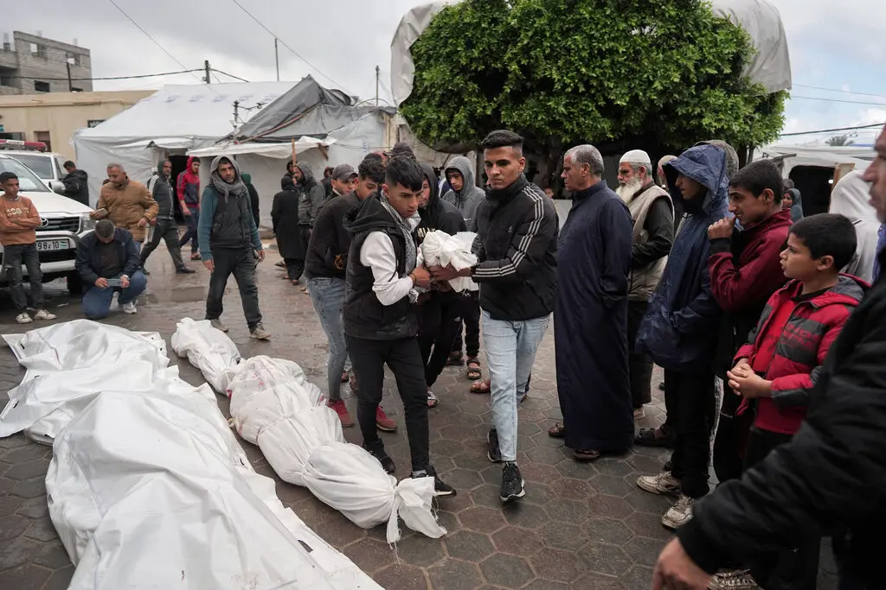
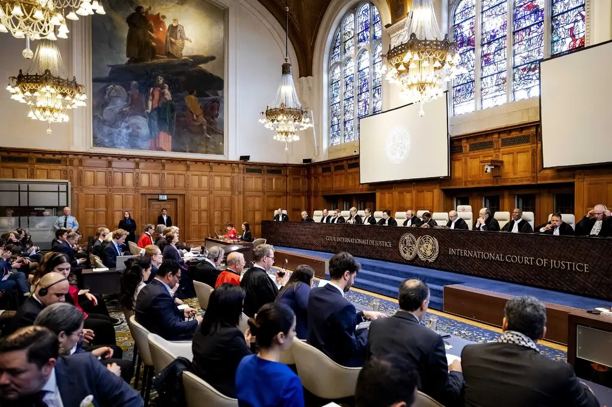
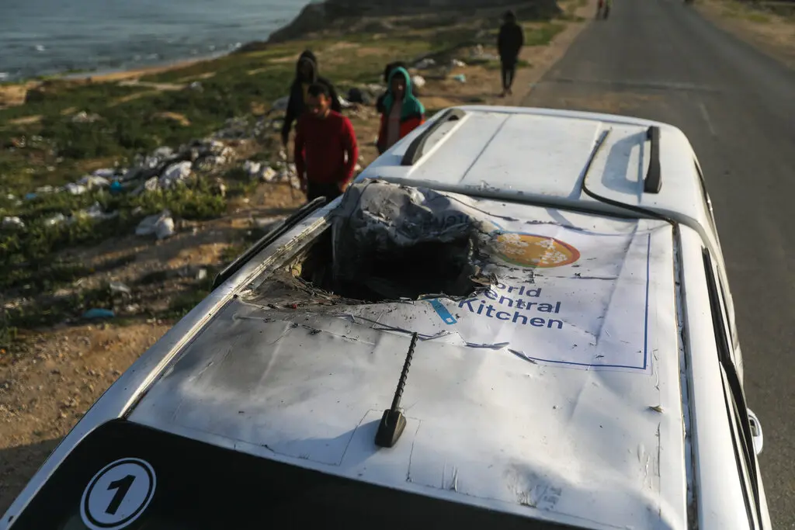

Title

Israeli soldiers in January in the central Gaza Strip. The war there has prompted war crimes charges against Israel and allies that sell it weapons.Credit...Avishag Shaar-Yashuv for The New York Times
For months, Western governments have provided military support for Israel while fending off accusations that their weapons were being used to commit war crimes in Gaza. But as a global outcry over the growing death toll in Gaza mounts, maintaining that balance is becoming increasingly difficult, as was clear on a single day this past week. On Tuesday, in a United Nations court, Germany found itself having to defend against accusations that it was complicit in genocide against Palestinians in Gaza by exporting weapons to Israel. A few hours later, in Washington, a top Democrat and Biden administration ally, Representative Gregory W. Meeks of New York, said he might block an $18 billion deal to sell F-15 fighter jets to Israel unless he was assured that Palestinian civilians would not be indiscriminately bombed. And two miles away, at a media briefing at the State Department, Britain’s foreign minister, David Cameron, was pressed on what his government had concluded after weeks of internal review about whether Israel has breached international humanitarian law during its offensive in Gaza. The governments of Germany and the United States remain the backbone of international military support for Israel, accounting for 95 percent of major weapons systems sent to Israel, according to the Stockholm International Peace Research Institute, which tracks the global weapons trade. So far, the pressure has not swayed them or Britain, though President Biden this month went further than he ever had, threatening to condition future support for Israel on how it addresses his concerns about civilian casualties and the humanitarian crisis in Gaza. Mr. Cameron also equivocated, if only a bit. After defending Israel at the briefing and suggesting that the recent advice he had received did not conclude that arms exports should be halted, he said that the British government’s position reflected only “the latest assessment” of the issue, implying some flexibility. Global outrage over a war that the Gazan health authorities say has killed more than 33,000 Palestinians, including 13,000 children, has already upended geopolitics and could help determine the outcome of the American presidential election in November. Increasingly, it also raises the threat of war crimes charges against governments that export weapons in conflicts where opponents argue international humanitarian law has been violated.
Palestinians on Wednesday carrying the bodies of several people, all members of one family, who were killed in an overnight bombardment in the Nuseirat neighborhood in central Gaza.Credit...Agence France-Presse — Getty Images
Such concerns were raised recently by more than 600 lawyers and retired judges who urged the British government to freeze weapons shipments to Israel, citing a “plausible risk” of genocide in Gaza. Israel vigorously denies accusations of genocide, arguing that it needs to defend itself against Hamas, which led the Oct. 7 attack that Israeli officials say killed about 1,200 people. A threatened Iranian strike on Israel in retaliation for the Damascus bombing that killed a number of high-ranking Iranian officers seems certain to shake up an already volatile situation. Nevertheless, as the death toll has risen in Gaza, Belgium, Canada, Italy, the Netherlands and Spain have all halted arms deals with Israel. The European Union’s top diplomat, Josep Borrell Fontelles, has appeared to discourage sending more weapons, wryly noting in February that “if the international community believes that this is a slaughter, that too many people are being killed, maybe they have to think about the provision of arms.” The hearings this past week against Germany, at the U.N.’s International Court of Justice, was the most recent chilling factor for Israel’s arms suppliers. And matters could grow even worse if Israel follows through on its plans to invade Rafah, the city in southern Gaza where hundreds of thousands of displaced Gazans are sheltering.
The International Court of Justice convening to hear the case against Germany’s financial and military aid to Israel, brought by Nicaragua, on Tuesday in The Hague.Credit...Robin Van Lonkhuijsen/EPA, via Shutterstock
The case, brought by Nicaragua, highlighted concerns that foreign weapons sales to Israel have done as much to kill Palestinians as they have to help protect the Jewish state. Israel has strongly denied that it is committing genocide, but it was ordered by the court in February, in a separate case brought by South Africa, to take steps to prevent atrocities. Germany is estimated to have approved about $353 million in arms exports to Israel last year, although officials have said most military aid provided since the war began was nonlethal. Accusations that its weapons might have contributed to genocide has stung Germany, given its World War II-era crimes, although public opposition to the war and concerns about being liable for atrocities have grown. “This was such an emotional wave that went through parts of German society — so many people were taking sides,” said Christian Mölling, the research director for the German Council on Foreign Relations. But, he said, it is unclear if public antipathy toward Israel will ultimately cut off weapons sales, in part because “the overall amount of delivery is astonishingly low.” Approving weapons exports to Israel is also landing its allies in local or national courts. That has ramped up anxiety for governments that assumed their arms shipments were too small to attract international rage. In the Netherlands, a state court in February ordered the government to stop sending parts for F-35 fighter jets to Israel, calling it “undeniable that there is a clear risk” of the equipment being used “in serious violations of international humanitarian law.” The Dutch government is appealing the decision, arguing that the jets are crucial for Israel’s security against regional enemies like Iran and Hezbollah. Total exports of military goods to Israel from the Netherlands in 2022, the most recent figures available, amounted to about $11 million, officials said.
A protester in February outside a building in The Hague, where a court was weighing whether the Netherlands could send F-35 fighter jet parts to Israel.Credit...Lex Van Lieshout/Agence France-Presse — Getty Images
In Italy, the government halted its arms trade with Israel only weeks after the war in Gaza began, in “a suspension that continues to this day,” Guido Crosetto, the Italian defense minister, told Parliament last month. Officials said that decision was made to ensure Italy was compliant with international humanitarian laws and a national policy against supplying arms to countries at war. Although Italy delivered some weapons late last year to fulfill pre-existing contracts, Mr. Crosetto said they “do not concern materials that could be used with repercussions on the civilian population of Gaza.” Only about 2 percent of Israel’s imported weapons come from Italy, amounting to about $9.6 million in 2022. Yet Italy ranked as the third-largest foreign supplier of major weapons systems to Israel in the years leading up to the war, according to the Stockholm International Peace Research Institute, which tracks arms transfers. By far the largest exporter of weapons to Israel is the United States, which committed in 2016 to a 10-year, $38 billion military aid package, including $5 billion for missile defense, with grants that underwrite Israeli purchases from American defense companies. The Biden administration is assessing whether Israel has violated international law in Gaza and, as of last week, “we’ve not seen any indication they have,” said John F. Kirby, a White House spokesman. The government is required by law to cut off American military support to countries that restrict humanitarian aid deliveries, as Israel is widely accused of doing in Gaza. More than one million Palestinians are facing famine and more than 200 aid workers have been killed, including seven killed this month in airstrikes on a World Central Kitchen convoy. Over the past six months, President Biden has repeatedly proclaimed his “unwavering" support for Israel and its right to defend itself — not only from Hamas but also from Iran and allied militants in Lebanon and Yemen. “We’re going to do all we can to protect Israel’s security,” he said at the White House on Wednesday. Yet Mr. Biden has gradually taken a tougher tone against Israel as the war wears on, and the bombing and invasion have sent civilian casualties spiraling. “They need to do more,” Mr. Biden said of Israel’s government during the same White House news conference. .
A vehicle used by World Central Kitchen that was hit last week in an Israeli attack in Deir al Balah, in the central Gaza Strip, killing seven aid workers.Credit...Ismael Abu Dayyah/Associated Press
But that has not been enough to satisfy Americans who want Mr. Biden to use the threat of an arms cutoff to pressure the Israelis to accept a cease-fire. That sentiment is being echoed by some Democrats who worry about his re-election prospects and the dismal down-ballot effect it could have on the rest of the party. In a recent flurry of letters, at least seven Democratic senators and more than 50 House Democrats, including Representative Nancy Pelosi, Democrat of California and a former House speaker, have urged Mr. Biden to halt all weapons transfers to Israel. Adding to the pressure, a coalition of a dozen liberal organizations and labor unions that will be a key part of Mr. Biden’s re-election campaign demanded in a letter on Thursday that he end military aid to Israel until its government lifts restrictions on humanitarian aid to Gaza. If not, he could risk losing support from reliable Democratic voters — particularly younger people, said Cristina Tzintzún Ramirez, the president of NextGen America, which focuses on driving voter turnout and was part of the coalition. “We are concerned with the humanitarian and moral implications,” said Ms. Tzintzún Ramirez, “and the political survival of the administration.” Jason Horowitz and Reid J. Epstein contributed reporting. Lara Jakes, based in Rome, reports on diplomatic and military efforts by the West to support Ukraine in its war with Russia. She has been a journalist for nearly 30 years. More about Lara Jakes